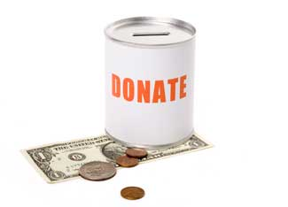

No matter if you owed taxes this year or received a refund, it's never too early to start thinking about next April. And whether you want to have more deductions next year or just want to feel good about where your money goes, giving to charities is an easy and fulfilling way to make a difference. Charity Navigator provides a list of nonprofit groups from around the world. Many of us are familiar with outstanding groups such as Defenders of Wildlife, the Nature Conservancy, the Sierra Club and others. But here are several organizations that do great work yet perhaps fly under the radar. Whether you can afford a donation or not, the following nonprofits offer valuable information and resources.
American Rivers
If you want to help protect rivers and promote clean water, this is a great group to support. American Rivers works closely with local river protection groups to promote rivers as a valuable asset to any community. Its campaigns advocate for right-to-know legislation, explore new ways to provide reliable water sources to communities, assist in restoring natural water resources and establish trails to connect people to their local rivers. See if one of your local rivers in on the endangered list.
Asthma and Allergy Foundation of America
AAFA is the leading patient organization for people with asthma or allergies. Its motto “life without limits” is reflected in the many things they do. AAFA is working toward labeling all certified non-allergy products including bedding, flooring and plush toys. Find the allergy forecast in your area, information on several types of asthma and the “Asthma Capitals” on their Web site.
Beyond Pesticides
With summer just around the corner, many people are looking to improve their lawns or plant gardens. Beyond Pesticides strives to inform us about the harmful effects of toxic chemicals to people and the environment. See its “Gateway” to find an extensive list of harmful chemicals and their environmental and health effects. Beyond Pesticides also provides solutions for less toxic household and garden pest control.
Center for Health, Environment & Justice
Lois Gibbs exposed the dangers of toxic chemicals when she helped 833 families relocate in 1981, after learning their homes sat next to 20,000 tons of toxic chemicals. Shortly after, she started CHEJ. The group has convinced McDonalds to quit using Styrofoam cups and Microsoft to not use PVC plastic. CHEJ supports several different campaigns including BE SAFE and Green Flag Schools. Its Community Assistance program helps groups get organized, set goals and execute its plan to help the environment.
Children’s Environmental Health Network
CEHN promotes a healthy environment for children by protecting them from health hazards, such as chemicals, food issues and disease. They educate health professionals, create public awareness of environmental hazards and conduct prevention-oriented research. Use their Resource Guide to see other organizations that support a healthy environment for children or to read about why children are affected more than adults by environmental hazards. The most up-to-date environmental news stories also are posted on their Web site.
Environmental Working Group
EWG wants to protect the public from health problems created from toxic hazards and replace federal policies that damage the environment with policies that promote conservation and sustainable development. Through its research, EWG strives to educate people about new environmental hazards. EWG’s work has focused on everything from dangerous skin care products to pesticides in produce. Also, see the 10 easy things you can do to reduce pollution.
Food Allergy & Anaphylaxis Network
It is estimated that close to 12 million Americans suffer from food allergies. With no known cause of these allergies, the FAAN organization funds research, promotes education and builds public awareness. Kids can meet Alexander and friends on the Web site designed specifically for kids with food allergies. Resources also are available for teens and schools.
International Mountain Bicycling Association
You could be in for an adventure with IMBA. This organization promotes the creation and upkeep of trails for mountain bikers worldwide. Look for the Trail Care Crew, which travels around the United States advocating and maintaining trails. IMBA works closely with land managers to create partnerships that lead to lasting, low impact trails for everyone from beginners to advanced cyclists.
Institute for Transportation and Development Policy
This international organization focuses on environmentally sustainable transportation policies. Their programs include developing mass transits, improving conditions for cycling and walking, incorporating two- and three-wheelers into city transportation and reducing congestion and emissions. ITDP has redirected funding to multi-modal transport solutions instead of road projects. They also promote projects that directly reduce emissions and accidents.
Student Conservation Association
Building the next generation of conservation leaders is SCA’s goal. They provide internships and trail crew opportunities to teach high school students about the importance of conservation through hands-on experience. Through their community programs, students make local contributions and gain knowledge from other SCA members. National crew members work on preserving trails and protecting wildlife habitats.
To learn more about other organizations read:
Before supporting any nonprofit group, be sure to research their work and mission so you can donate with confidence.
|
 ISTOCKPHOTO/FENG YU You can easily make a difference by donating or volunteering to a worthy nonprofit organization. Find one whose work matches your values. |
|
|